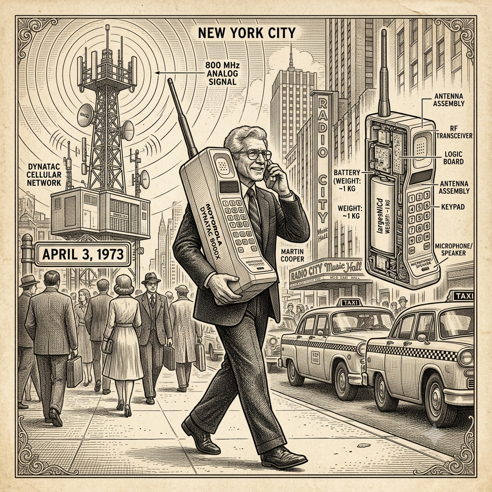
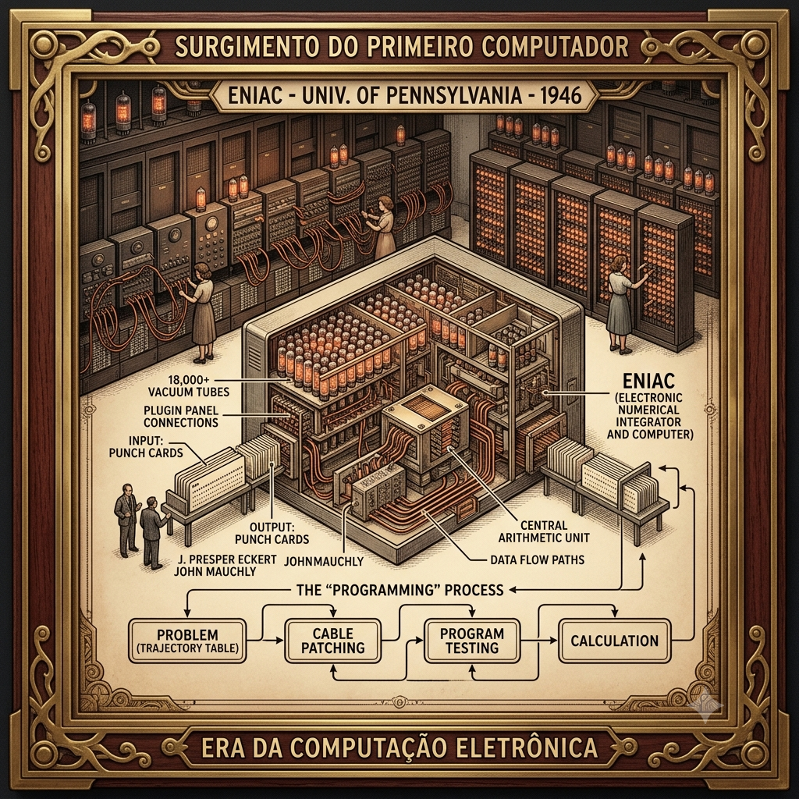
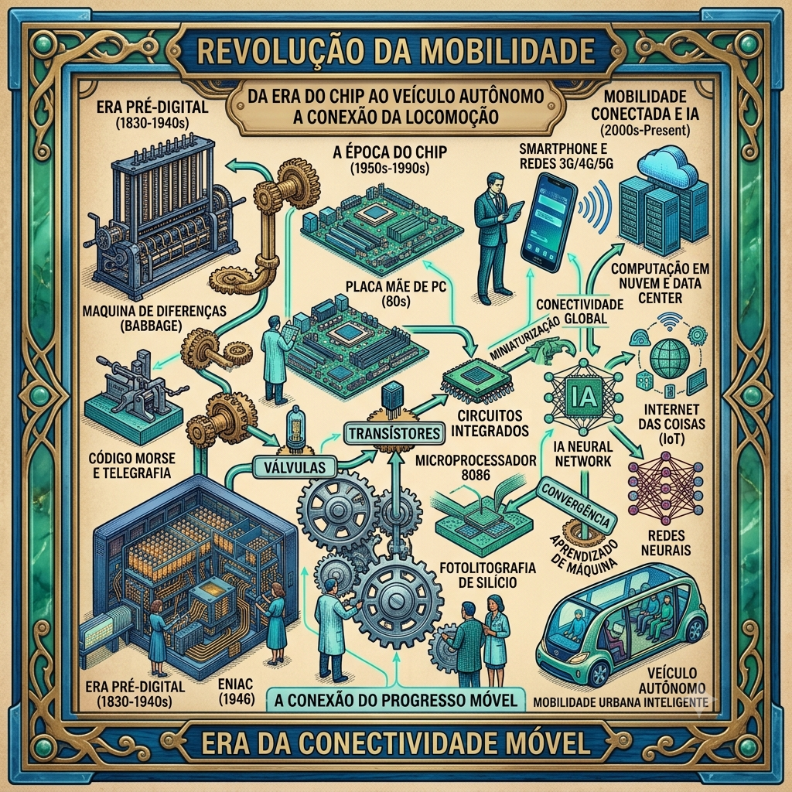

Meu primeiro post
Por: Mariele Breck
Boas-vindas ao meu novo blog! Aqui vou compartilhar dicas de programação e curiosidades da área de tecnologia.

A era do celular
Por: Mariele Breck
O primeiro telefone celular da história foi o Motorola DynaTAC 8000X, lançado em 1983, que pesava quase um quilo.
Fonte: TechTudo

O primeiro computador
Por: Mariele Breck
O primeiro computador, o UNIVAC, usava 5 200 válvulas, pesava 13 toneladas e consumia 125 kW para fazer 1905 operações por segundo, com um clock de 2,25 MHz. O sistema completo ocupava mais de 35 m² de espaço no piso.
Fonte: Wikipédia

História da tecnologia
Por: Mariele Breck
A história da tecnologia relaciona-se com a história da ciência, que inclui a maneira como os seres humanos adquiriram o conhecimento básico necessário para construir coisas úteis.
Fonte: Wikipédia
A grande revolução
Por: Mariele Breck
A revolução tecnológica transformou a dinâmica do trabalho em equipe nas organizações modernas, criando novas formas de comunicação e colaboração.
Fonte: Blog da PUCRS Online
Tempos modernos
Por: Mariele Breck
Mais de 5 bilhões de pessoas em todo o mundo possuem um smartphone, o que representa mais de 60% da população global.
Fonte: WP AUTO NEWS
Irresponsabilidade brasileira
Por: Mariele Breck
O Brasil, despeja anualmente, 1,3 milhão de toneladas de plástico no oceano.
Fonte: Oceana